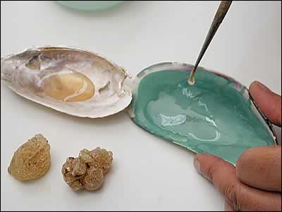

Processing Malachite

Gum arabic is then added in tiny amounts to bind the malachite solution. Gum arabic is a natural-forming glue, a resin that seeps from the acacia tree and then hardens. Mughal artists or their assistants, would dissolve this resin and then boil it to create a syrupy liquid. | |
| ...previous | next... |